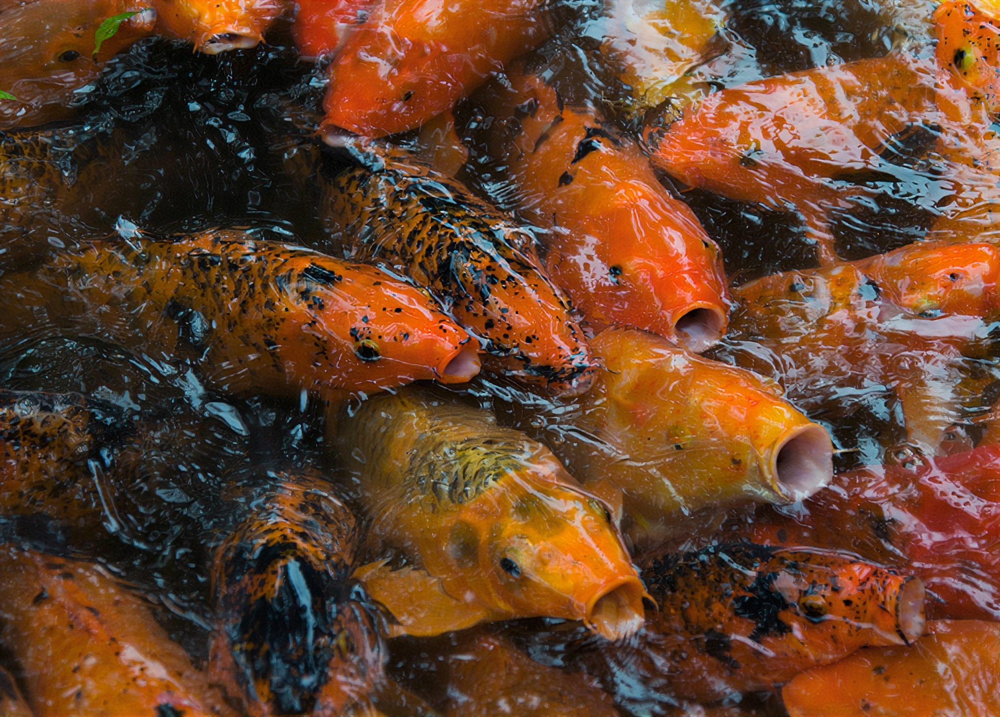
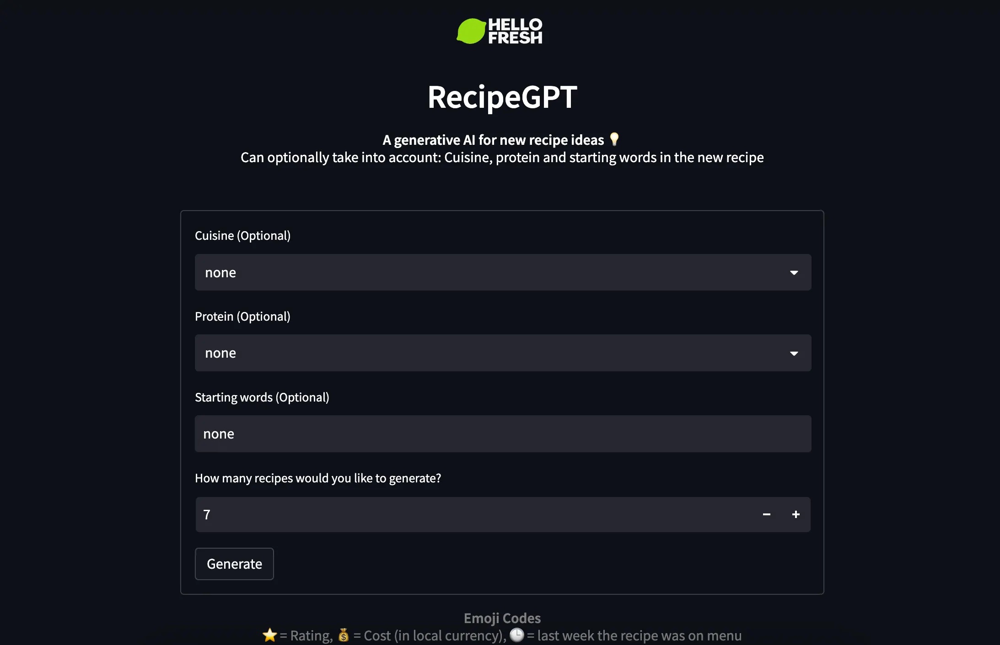
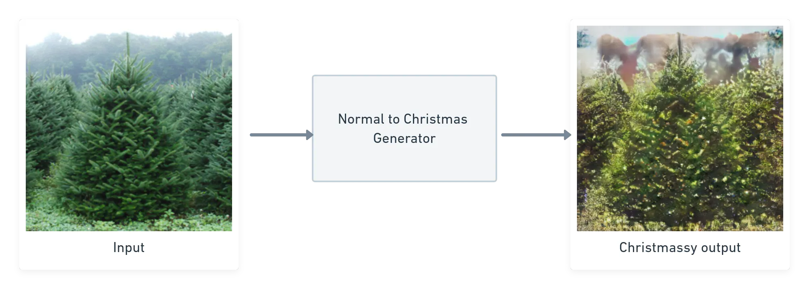
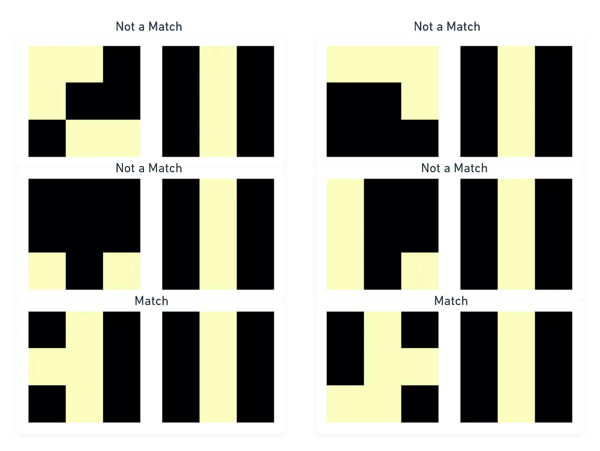

Ahoy, I'm Hasnain. Welcome to my corner of the internet. Here are some things I'd like to share:
Generative and real-time models, built end to end. Drag the slider to compare before and after.
A single-image super-resolution framework that upsamples videos 4× in real time on a GPU. Play around with the slider.
4× upscale · real-time
Notes on applied ML, generative models, and getting research into production. Mostly on Medium.

An exploration on training small language models for generating recipes aligned to search engines.

An experiment with CycleGANs to christmasify normal looking images

An illustrative and visual guide to understadning how convolutional neural networks work
Some things I've said out loud — on bringing ML research into the real world.
On the real-world data and model "flywheel" — the messy problems behind shipping ML.
A talk on the problems and solutions of getting research models past the demo stage.
A couple of papers and a patent, mostly around segmentation and active learning.